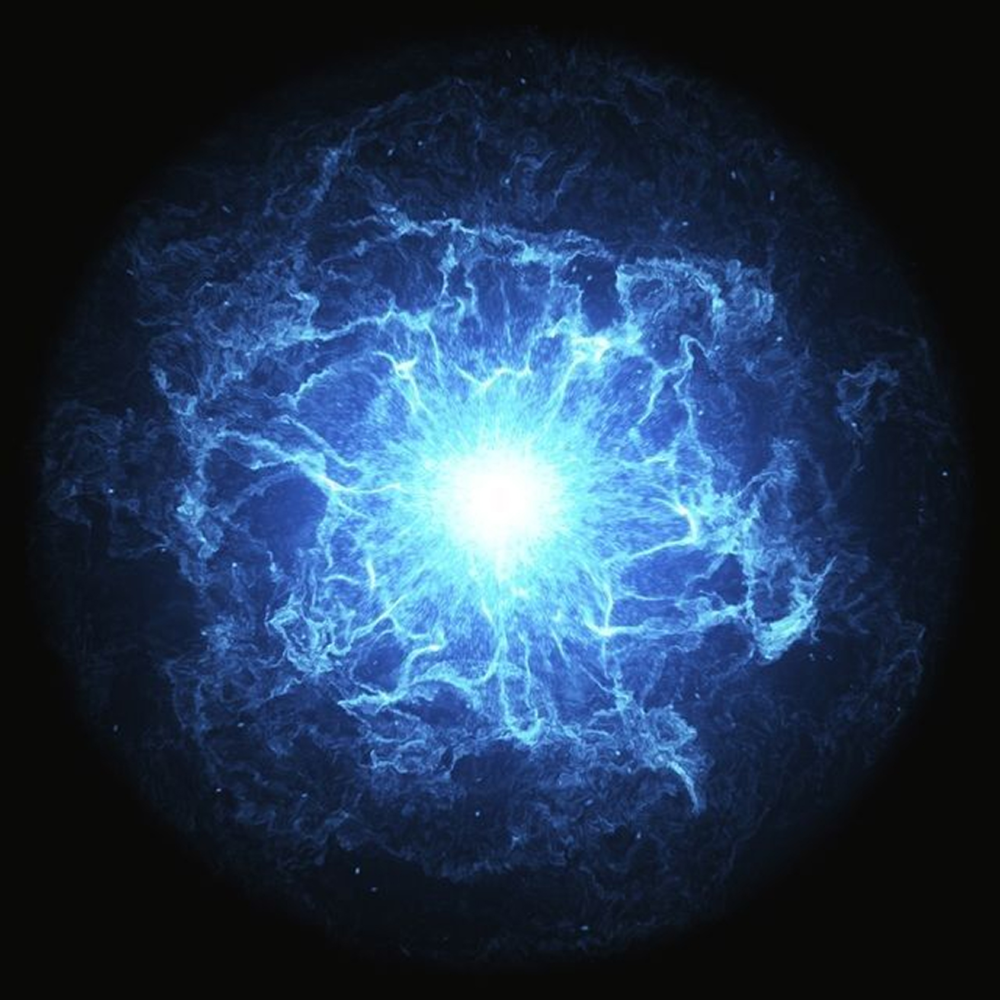
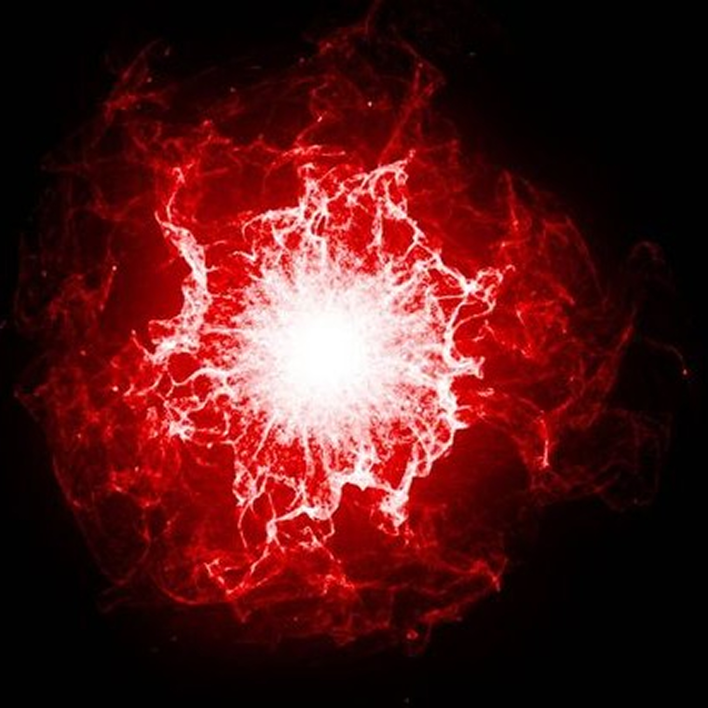
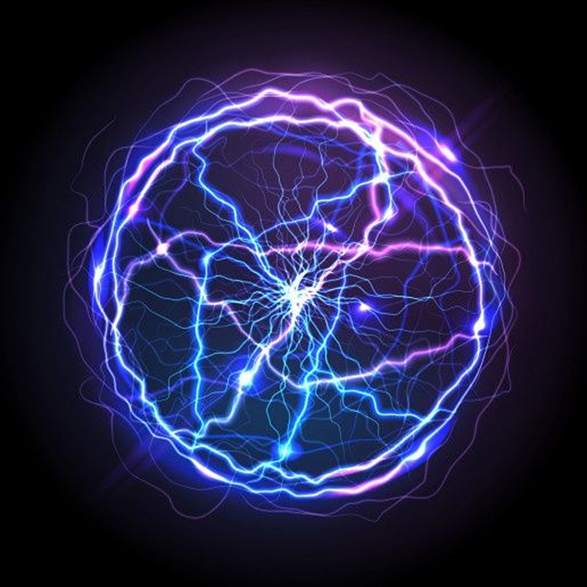

Atom adalah unit dasar materi yang membentuk semua benda di alam semesta.

Proton memiliki muatan positif dan terletak di inti atom. Satu proton memiliki massa sekitar 1 unit massa atom (uma).
Neutron tidak bermuatan (netral) dan juga berada di inti atom bersama proton. Massa neutron hampir sama dengan proton.


Elektron memiliki muatan negatif dan bergerak dalam orbit di sekitar inti atom. Elektron memiliki massa yang jauh lebih kecil dibandingkan proton dan neutron.
Isotop adalah varian dari unsur kimia yang sama dengan jumlah neutron yang berbeda. Untuk suatu unsur kimia tertentu, semua Isotop memiliki jumlah proton dan elektron yang sama tetapi jumlah neutronnya berbeda.